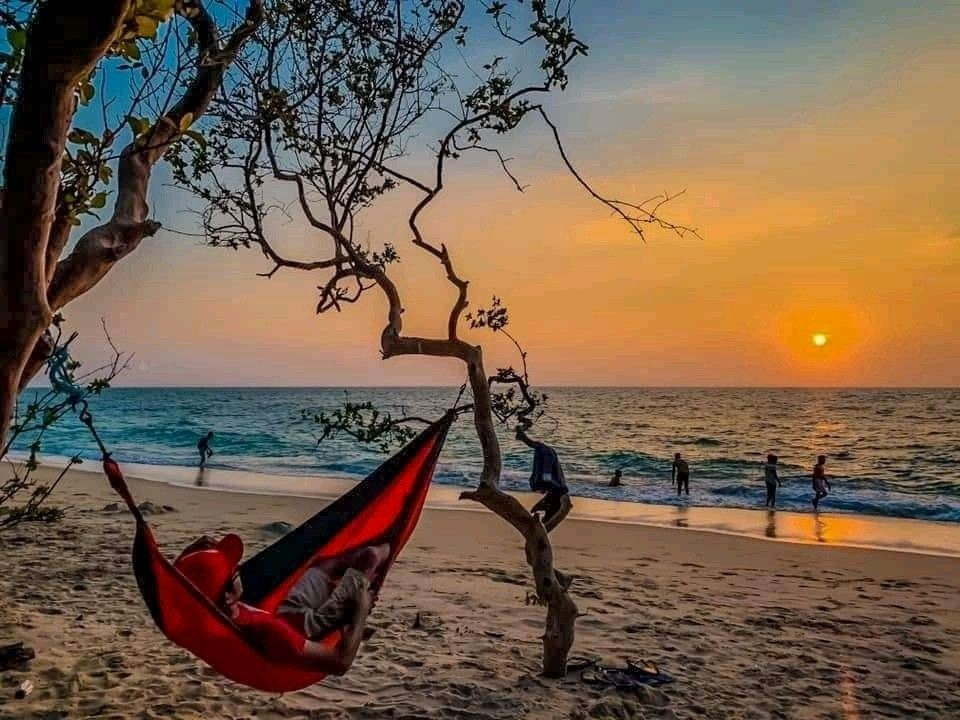

Baththalangunduwa
Baththalangunduwa is an island in North Western Province, Sri Lanka. It is a well known place for camping. If you are looking for a place to get an experience of camping in an island, this is the place to go.